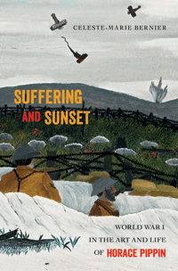

<body bgcolor="#FFFFFF" text="#000000" link="#0000FF" vlink="#CC0000" alink="#CC0000"><center><hr width="350" size="1" align="center" noshade>A majestic biography of the pioneering African American artist<hr width="350" size="1" align="center" noshade><p><a href="https://cdcshoppingcart.uchicago.edu/Cart/ChicagoBook.aspx?ISBN=9781439912737&&PRESS=temple" target="_top">Buy this book!</a> | <a href="https://cdcshoppingcart.uchicago.edu/Cart/Cart.aspx?PRESS=temple" target="_top">View Cart</a> | <a href="https://cdcshoppingcart.uchicago.edu/Cart/Cart.aspx?PRESS=temple" target="_top">Check Out</a></p><p></p></center><!--none//--><h1>Suffering and Sunset</h1>
<H2>World War I in the Art and Life of Horace Pippin</H2>
<h3>Celeste-Marie Bernier</h3>
<P>cloth 1-4399-1273-4 $39.95, Oct 15, <FONT COLOR=#990033>Available</FONT>
<BR> 552 pp
6.125x9.25
35&nbsp;halftones 32&nbsp;color&nbsp;illustrations
</P><BLOCKQUOTE><I>"Celeste-Marie Bernier has written a sweeping account of the art, life, and time of Horace Pippin, one that brings unprecedented color to and a clear understanding of an under-represented American artist. The voluminous research in </i>Suffering and Sunset<i> takes the reader beyond the realm of art to establish a broad historical base that includes issues of race and identity in American culture. The book gives an unbiased biographical account of the artist’s everyday activities, much of which is drawn from Pippin’s war diary and his day-to-day transactions with his art dealer. Salient among Bernier’s observations about Pippin’s art and his long journey as a World War I soldier in Europe are the extraordinary experiences he endured in the pursuit of his artistry, some of which were purely racist in nature. Relying heavily on Pippin’s own personal account of his life as an artist, Bernier paints an indelible word picture of the pain, struggle, and triumph of one of the most important American artists of the twentieth century."</i> <br>&#151<b>David C. Driskell</b>, Distinguished University Professor of Art,
Emeritus, University of Maryland, College Park</I></BLOCKQUOTE>
<P>For self-made artist and World War I soldier Horace Pippin—who served in the 369th African American infantry—war provided a formative experience that defined his life and work. His transformation of combat service into canvases and autobiographies whose emotive power, psychological depth, and haunting realism showed his view of the world revealed his prowess as a painter and writer. In <i>Suffering and Sunset</i>, Celeste-Marie Bernier painstakingly traces Pippin’s life story of art as a life story of war.
<P>Illustrated with more than sixty photographs, including works in various media—many in full color—this is the first intellectual history and cultural biography of Pippin. Working from newly discovered archives and unpublished materials, Bernier provides an in-depth investigation into the artist’s development of an alternative visual and textual lexicon and sheds light on his work in its aesthetic, social, historical, cultural, and political contexts.
<P><I>Suffering and Sunset</I> illustrates Pippin’s status as a groundbreaking African American painter who not only suffered from but also staged many artful resistances to racism in a white-dominated art world.
<BR>&nbsp;<h2>Excerpt</h2><P>Excerpt available at <a href="http://www.temple.edu/tempress">www.temple.edu/tempress</a></p>
<BR>&nbsp;<h2>Reviews</h2>
<p><i>"</i>Suffering and Sunset<i> is an engaged consideration of Horace Pippin as an African American artist and World War I veteran who was forever changed by his experiences in the trenches. Celeste-Marie Bernier examines Pippin’s writings and art as linked creative forms through which Pippin described the European battlefield and the ways its violence permeated his thinking after he returned to the United States. Noting that Pippin volunteered to join the war effort, Bernier finds in his images and texts a shift to an anti-war perspective. In Bernier’s hands, Pippin’s work is a rich historical archive that also stands as a testament to his determination to represent his era."</i><br>&#151<b>Jacqueline Francis</b>, author of <i>Making Race: Modernism and “Racial Art” in America</i>
<p><i>“Bernier painstakingly examines Pippin’s manuscripts, paintings, and sketches to show how his meager written legacy casts revealing light on his other works…. The author analyzes Pippin’s work in exhaustive…detail, comparing the scant information of his wartime experience with the stark monotones in his paintings…. [The] in-depth analyses [are] filled with learned conjecture.”</i>
<br>&#151<b><i>Kirkus Reviews </i></b>
<p><i>"In this generously illustrated intellectual history and cultural biography, Bernier makes a persuasive case for [Pippin] being one of the 20th century's most groundbreaking artists."</i>
<br>&#151<b><i>Times Higher Education</i></b>
<p><i>"[A] provocative, meticulously researched, multidisciplinary, and multilayered interpretation of the paintings and autobiographical writings of Horace Pippin.... Through extensive and ground-breaking archival work, she offers, throughout the book, intriguing and previously unknown information about Pippin’s family history, including the likely identity of his mother and the misconception that Pippin was the grandchild or son of slaves.... Bernier presents an innovative recovery and repositioning of Pippin’s written archive."</i>
<br>&#151<b><i>American Literary History</i></b>
<BR>&nbsp;<h2>Contents</h2><P>
<p>List of Figures and Color Plates
<br>Introduction • The Portrait of a Soldier Is the Portrait of an Artist
<p><b>Part I: A Life Story of War Is a Life Story of Art</b>
<br>1. “I have seen men die”: The “Unknown Black Soldier” and Horace Pippin as Memorialist-Witness to a Life Story of War
<br>2. “Don’t tell me how to paint”: Horace Pippin as a Self-Made Soldier-Artist
<p><b>Part II: War and Writing in the Life of Horace Pippin</b>
<br>3. “the houl intir batel feel were hell”: Language, Symbolism, and Remembering No Man’s Land
<br>4. “The Body of Men”: Horace Pippin’s <i>Autobiography</i> as an Antiwar Memorial
<p><b>Part III: War and Painting in the Life of Horace Pippin</b>
<br>5. <i>The Ending of the War</i> versus <i>The End of the War</i>: A Warring Past in a Peacetime Present in Horace Pippin’s Visual Warscapes
<br>6. Tracing a “ghost-like memory”: The Afterlife and Afterdeath of World War I in Horace Pippin’s Still Lifes, Domestic Interiors, Allegorical Landscapes, and Political Works
<p>“I am a lone”: Debate, Discovery, and Controversy in the Life and Letters of Horace Pippin
<p>Epilogue
<p>Acknowledgments
<p>Notes
<br>Glossary
<br>Selected Bibliography
<br>Index
</P><BR>&nbsp;<H2>About the Author(s)</H2>
<P><b>Celeste-Marie Bernier</b> is Professor of African American Studies at the University of Nottingham, UK. She is the author of <i>Characters of Blood: Black Heroism in the Transatlantic Imagination</i> and <i>African American Visual Arts: From Slavery to the Present</i>.</P>
<BR><H2>Subject Categories</H2>
<p><A HREF="/tempress/african.html" TARGET="_top">African American Studies</a>
<BR><A HREF="/tempress/art.html" TARGET="_top">Art and Photography</a>
<BR><A HREF="/tempress/biography.html" TARGET="_top">Biography/Memoir/Autobiography</a>
</p>
<p align="center"><a href="https://cdcshoppingcart.uchicago.edu/Cart/ChicagoBook.aspx?ISBN=9781439912737&&PRESS=temple" target="_top">Buy this book!</a> | <a href="https://cdcshoppingcart.uchicago.edu/Cart/Cart.aspx?PRESS=temple" target="_top">View Cart</a> | <a href="https://cdcshoppingcart.uchicago.edu/Cart/Cart.aspx?PRESS=temple" target="_top">Check Out</a></p><p><font face="Arial" size="1"><a href="copyright.html" onMouseOver="window.status='Web Copyright Policy';return true;" onMouseOut="window.status=''" title="Web Copyright Policy">&copy;</a> 2016 <a href="http://www.temple.edu" target="new" onMouseOver="window.status='Link to Temple University home page';return true;" onMouseOut="window.status=''" title="Link to Temple University home page">Temple University</a>. All Rights Reserved. http://www.temple.edu/tempress/titles/2372_reg.html</font></p>